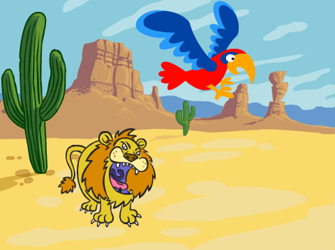

Introducció
Aquest és un joc per dos jugadors on competeixen un lloro i un lleó pel desert. Cada jugador ha de prémer una tecla tant ràpid com pugui per fer moure l’animal i guanya el primer que arribi a la vora de la pantalla.

Pas 1: Creeu l’escenari i afegiu-hi els objectes
Llista de tasques
- Seleccioneu l’escenari i afegiu-hi el fons Natura/desert
- Esborreu el personatge ‘Fèlix’
- Afegiu-hi el personatge lleó que trobareu a la carpeta Animals.
- Seguidament, afegiu-hi el personatge “parrot” (lloro) que també trobareu a la carpeta Animals. Feu-lo més petit per tal que sigui més o menys com el lleó.
Pas 2: Feu que el lleó i el lloro es moguin
Volem que els objectes es moguin quan premem una tecla.
Llista de tasques
Primer, seleccioneu l’objecte lleó i feu que es faci 4 passos quan premeu la tecla ‘L’.
![quan la tecla [l v] es premi
mou-te (4) passos](4d9722dec51edca5aa2a427161b8d83c1a09867d.png)
Seguidament, seleccioneu l’objecte lloro i feu que també es mogui 4 passos quan premeu la tecla ‘A’.
![quan la tecla [a v] es premi
mou-te (4) passos](01e1f543a2aef9b54a918246c20904f522f4e72e.png)
Proveu el projecte
Feu clic la bandera verda
El lleó i el lloro, es mouen per la pantalla quan premeu les tecles ‘L’ i ‘A’?
Deseu el projecte
Pas 3: Comenceu la cursa
Necessitem un sistema per començar la cursa i saber qui l’ha guanyat. Primer, crearem un botó d’inici.
Llista de tasques
- Afegiu un nou personatge. De la carpeta “Coses” escolliu el personatge Button3. Canvieu-li el nom per ComenceuCursa.
- Modifiqueu el vestit del personatge, afegiu-hi el text ‘inici’ i feu clic a ‘D’acord’. Moveu el personatge al mig de l’escenari.
Afegiu un programa que mostri l’objecte ‘ComenceuCursa’ quan comenci el joc.

Finalment, volem que quan premem el botó, compti enrere a partir de 3, digui ‘endavant’ i s’amagui.
![quan es cliqui aquest personatge
digues [3] durant (1) segons
digues [2] durant (1) segons
digues [1] durant (1) segons
digues [Endavant!] durant (1) segons
amaga](b639b14ce862aac61031df3b22eb6c56aca8ac64.png)
Proveu el projecte
Feu clic a la bandera verda.
Al fer clic sobre el botó d’inici, comença a comptar enrere fins donar la sortida?
Deseu el projecte
Volem que els corredors només es moguin després de que s’hagi donat l’inici de la cursa. També volem saber quan la cursa s’ha acabat. Per tant, necessitem una variable que mantingui aquesta informació.
Afegiu una variable visible per tots els objectes anomenada
corrent. Feu que no sigui visible a l’escenari desmarcant-la al panell de variables.Fixeu la variable corrent a 0 a l’inici del joc. Llavors, canvieu el programa
quan la BANDERA VERDA es premideixant-lo així:![quan la BANDERA VERDA es premi
mostra
assigna a [corrent v] el valor (0)](439f1f21a029fdc2325795819513afe76492fa49.png)
A continuació, fixeu la variable corrent a 1 quan el rellotge de sortida hagi finalitzat.
Mentre la variable corrent no sigui 1, el lleó i el lloro han d’estar aturats. Feu clic a l’objecte Lloro. Afegiu un bloc de control a l’objecte que només permeti al lloro moure’s si corrent = 1.
![quan la tecla [a v] es premi
si <(corrent) = [1]> llavors
mou-te (4) passos](d163fa01113db939816c207e766a54b5a45cd5af.png)
Ara cal que feu el mateix per l’objecte lleó.
Proveu el projecte
Feu clic a la bandera verda.
El lleó i el lloro, es mouen únicament quan el compte enrere s’ha acabat?
Volem saber qui ha guanyat la cursa per a continuació reiniciar-la i poder començar de nou una partida.
Deseu el projecte
Pas 4: Acabant la cursa
Llista de tasques
Afegiu un nou bloc a l’objecte lloro que fixi la variable corrent a 0 quan l’objecte toqui la vora de la pantalla.
![quan la tecla [a v] es premi
si <(corrent) = [1]> llavors
mou-te (4) passos
si <tocant [vora v]?> llavors
assigna a [corrent v] el valor (0)](9812688df8eaa3803f959fb03d15f99c0570cb22.png)
Volem que el lloro ens indiqui si ha guanyat la cursa. Enregistreu un so nou per al lloro que ens avisi en el cas que l’hagi guanyat. Feu clic a
sonsi graveu el so del lloro guanyant la cursa!A continuació, afegiu els blocs que faran reproduir el so que heu enregistrat i que faran dir al lloro que ha guanyat la cursa.
![quan la tecla [a v] es premi
si <(corrent) = [1]?> llavors
mou-te (4) passos
si <tocant [vora v]?> llavors
assigna a [corrent v] el valor (0)
toca el so [gravació1 v] fins que acabi
digues [El lloro ha guanyat!] durant (3) segons](b22fa2029cd5075270545c4ff0da91517c0028d4.png)
Finalment, repetiu els mateixos passos pel lleó.
Proveu el projecte
Feu clic a la bandera verda.
Podeu fer clic al botó d’inici i seguidament començar a córrer prement les tecles ‘A’ i ‘L’? Els objectes, toquen el seu corresponent so i missatge de victòria quan arriben al final de la cursa?
Deseu el projecte
Pas 5: Reiniciant la partida
En acabar la partida necessitem dir-li a la resta d’objectes que hem guanyat la cursa i reiniciar el joc per poder tornar a jugar-hi.
Necessitem que l’objecte que guanyi enviï un missatge a la resta dient que ha guanyat.
Llista de tasques
Feu clic a l’objecte Lloro. Afegiu un bloc que enviï “finalitzat” després de que l’objecte digui que ha guanyat.
![quan la tecla [a v] es premi
si <(corrent) = [1]?> llavors
mou-te (4) passos
si <tocant [vora v]?> llavors
assigna a [corrent v] el valor [0]
toca el so [enregistrament1 v]
digues [El lloro ha guanyat!] durant (3) segons
envia a tots [acabat v]](05b9e251512b3168f4001f516bb8e55ad1204f09.png)
Necessitem afegir un nou bloc que escolti els missatges d’acabament i mogui de nou el lloro a la línia de sortida. Què passa si canvieu el valor fixat a x?
![quan rebi [acabat v]
assigna el valor (-170) a x](e0d75068e581b24110c60aa4225d2850fdbedf0c.png)
Afegiu el mateix programa al lleó. Proveu diferents valors de x per assegurar-vos que el lleó i el lloro tornen a la línia de sortida.
També ens interessa posar al lleó i el lloro a la mateixa posició de sortida, per tant afegiu un altre programa als dos objectes que els mogui a la línia de sortida al fer clic sobre la bandera.

Finalment, feu clic a l’objecte botó i afegiu-hi un programa que el torni a mostrar quan rep el missatge ‘acabat’.
Proveu el projecte
Feu clic a la bandera verda.
Podeu competir contra amics si un de vosaltres prem la tecla ‘A’ per moure el lloro i l’altre la tecla ‘L’ pel lleó?
Deseu el projecte
Desafiament: Afegiu-hi un turbo
- Intenteu a afegir-hi un turbo que es pugui fer servir un cop per cursa i faci que el lleó o el lloro es moguin 30 passos de cop.
- Afegiu un nou vestit pels animals, amb foc sortint pel darrera i que apareixerà en el moment que premeu el turbo.
- Enregistreu nous sons pels animals, que es sentin quan premeu el turbo.
Proveu el projecte
Deseu el projecte
Ben fet, ja heu acabat. Ara podeu gaudir del joc!
No oblideu de que podeu compartir el vostre joc amb tots els vostres amics i familiars fent clic Comparteix a la barra de menú!